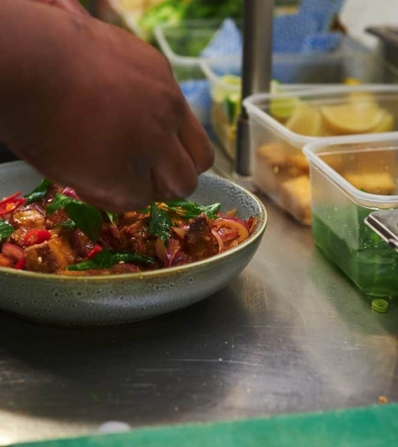

FROM OUR FAMILY TO YOUR TABLEPENANG ROOTS. BIRKENHEAD HOME.
Recipes passed down.
Memories made here.
For Chef James, the story starts with the family meals of his childhood in Malaysia. Today, those memories live on in Mulan’s kitchen.
Together with Carol and their sons, he’s created a welcoming neighbourhood spot where honest food and a little hospitality go a long way.
Made with heart,
James, Carol & familyMore of our story ↗
James, Carol & familyMore of our story ↗